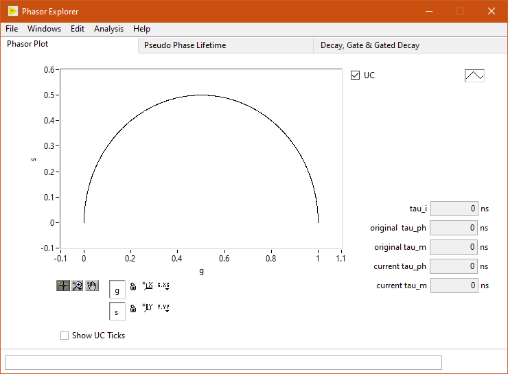
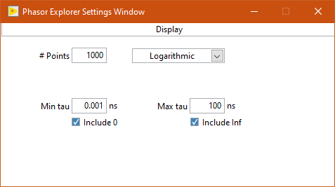
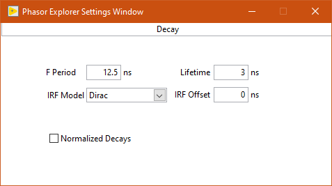
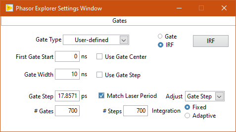
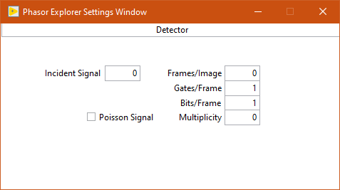
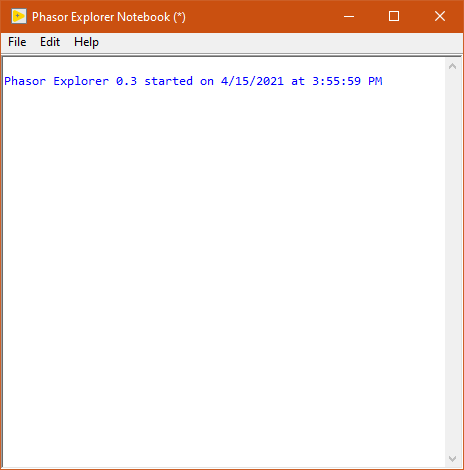
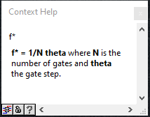
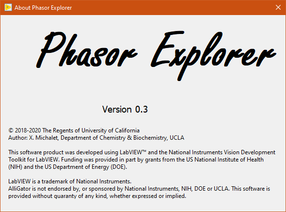

Windows¶
Phasor Explorer is comprised of one main Window and 2 child windows accessible from the top Windows menu. These different windows are briefly described next. For further information, please check the User Guide.
Main Window¶
The main window’s appearance depends on the selected pull-down menu option located below the menu bar.
The different Analysis sections in the manual describe the functions of the corresponding controls.
Generally, each panel shows one graph and a few controls (numeric controls or indicators, check boxes).
Each graph is a feature-rich LabVIEW object allowing many interactions with each individual or groups of plots, including saving or loading them as ASCII files.
Right-clicking a graph and choosing Copy Data will copy a bitmap image of the Graph, which can then be pasted into the Notebook (or elsewhere) for documentation.
Because of the finite resolution of such an image, it is generally recommended to save the raw data contained in each Graph (or individual plots) as ASCII files, and re-open them in a dedicated data representation software for publication quality results.
The top menu bar gives access to the following functions:
- File
Quit
- Windows
Settings (
Ctrl+E)Notebook (
Ctrl+N)
Edit
- Analysis
Phasor Plot (
Ctrl+P)Pseudo Phase Lifetime Plot (
Ctrl+L)Decay, Gate & Gated Decay Plots (
Ctrl+D)
- Help
Show Context Help (
Ctrl+H)About
The main window’s appearance depends on the selected tab located below the menu bar.
The different Analysis sections in the manual describe the functions of the corresponding controls.
Generally, each tab shows one graph and a few controls (numeric controls or indicators, check boxes).
Each graph is a feature-rich LabVIEW object allowing many interactions with each individual or groups of plots, including saving or loading them as ASCII files.
Right-clicking a graph and choosing Copy Data will copy a bitmap image of the Graph, which can then be pasted into the Notebook (or elsewhere) for documentation.
Because of the finite resolution of such an image, it is generally recommended to save the raw data contained in each Graph (or individual plots) as ASCII files, and re-open them in a dedicated data representation software for publication quality results.
Settings Window¶
The Settings window (which can be left open at all times) gives access to all parameters/options controlling the different types of calculations:
Display
Phasor
Decay
Gates
Detector
Once options and parameters have been set in the Settings window, calculations performed in the main window will use these parameters/options.
The whole set of options/parameter is also printed in the Notebook.
Display¶
To be described.

Decay¶
To be described.
Gates¶
To be described.
Detector¶
To be described.
Notebook¶
The Notebook is a Rich Text Box object in which most actions performed by the software are recorded. It is accessed via the Windows >> Notebook menu item (shortcut: Ctrl+N).
It can also be used to type in user comments, copy/paste text or graphics, etc. and in general is intended as a log of an experimental session.
The content of the Notebook can be saved (and re-opened within the Notebook) as a rich text format (.rtf) file.
Context Help Window¶
The Context Help window is a floating window and shows information (when available) about the object the mouse is over. It is shown or hidden using the Help >> Show Context Help menu item (shortcut: Ctrl+H).
About Window¶
The About Window is a dialog window (it prevents other windows from being interacted with). Click anywhere in it to close it.